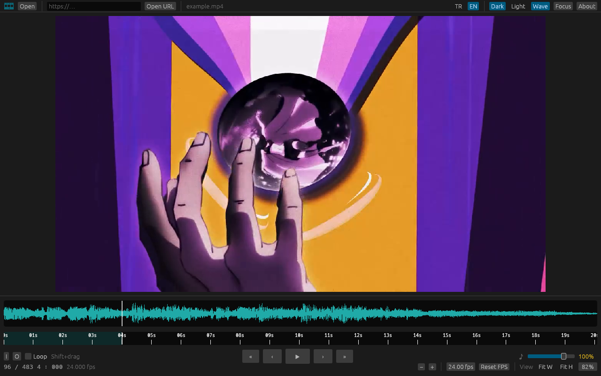

VFX Player
Advanced Video Player for VFX Experts. Frame-accurate review, not a consumer player. No installer.
Download vfx_editor.exe GitHub

Windows x64. FFmpeg and yt-dlp bundled. First launch: Türkçe / English.
Made by Murat Kirazkaya
Advanced Video Player for VFX Experts. Frame-accurate review, not a consumer player. No installer.
Download vfx_editor.exe GitHub

Windows x64. FFmpeg and yt-dlp bundled. First launch: Türkçe / English.
Made by Murat Kirazkaya